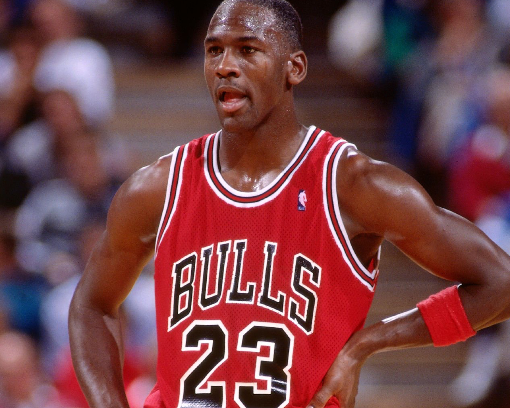

1988–89
Confirmed Population
1
Publicly Documented
1
Privately Verified
0
Total Documented
2
RESEARCH IN PROGRESS
Games Reviewed:
• Preseason: 0 of 0
• Regular Season: 6 of 82
• Postseason: 5 of 0
Last Updated: February 27, 2026
Population Summary
| Style | Confirmed | Public | Status |
|---|---|---|---|
| Home | 1 | 1 | ⏳ |
| Away | 1 | 0 | ⏳ |
Population reflects distinct season-worn garments (jerseys or full uniform sets) confirmed through research and documentation.

HOME
Publicly documented example.
Publicly documented sale confirmed.
Public Sale
Research & Provenance
This jersey was matched to various dates from December of ’89 to June of ’89 and is accompanied by matching shorts (photomatched to 7 games).
- Previously sold by the Chicago Bulls.
- Owned by a private collector.
- Total documented photo-matched games: 11
- *Undated photo-matches to two unique games
- Photomatched Sports Illustrated - November 6, 1989
Documentation
Photo Match Details
- Photo-Matched: Yes
- Games Photo-Matched: 6
- Apparent Games Photo-Matched: 5
- Total Games Photo-Matched: 11
- Photo-Matched By: MeiGray, SIA,
Documented Games
- January 13, 1989 — Denver Nuggets
- January 17, 1989 — Indiana Pacers
- January 21, 1989 — Phoenix Suns
- February 16, 1989 — Milwaukee Bucks
- May 5, 1989 — Cleveland Cavaliers
- June 2, 1989 — Detroit Pistons
- December 10, 1988 — Miami Heat
- December 20, 1988 — Los Angeles Lakers
- May 3, 1989 — Cleveland Cavaliers
- May 19, 1989 — New York Knicks
- May 27, 1989 — Detroit Pistons
Apparent Games

AWAY

In-season game imagery - 1988-89 road jersey.
Research in progress. No public example has surfaced.
Research & Provenance
This entry will be updated if a distinct physical example becomes publicly documented or as the complete season audit progresses and new evidence becomes apparent.